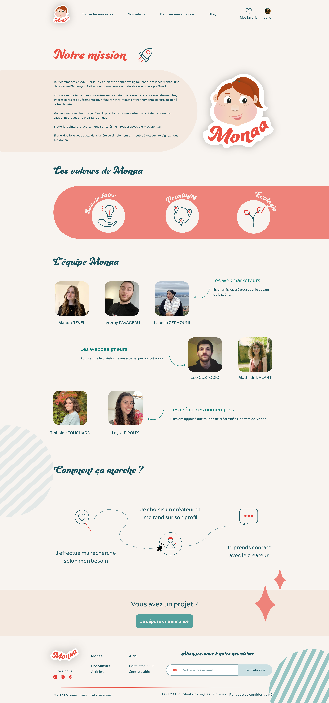
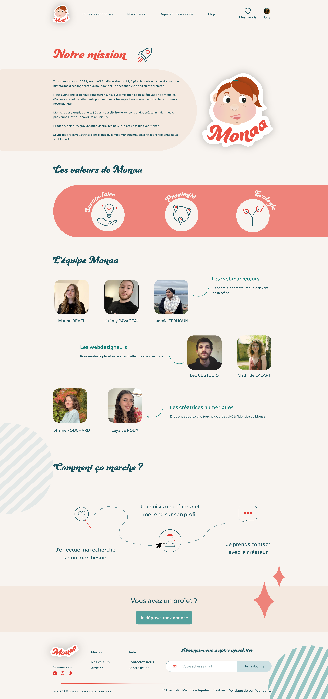

Monaa est une application web qui permet de mettre en relation des créateurs et des particuliers pour la répration et/ou la customisation de vêtements et biens matériels.
Ce projet a été réalisé dans le cadre du MyDigitalProject, projet de fin d'étude au sein de MyDigitalSchool. 7 étudiants de spécialités différentes, ont créé un concept innovant tant sur le plan marketing que design.
Je suis particulièrement fière d'avoir réalisé l'UI de ce projet (toute la structure ayant été réalisé par un autre camarade webdesigner).
 

Logiciel utilisé
Deux membres du groupes ont mis au point une identité pour Monaa. Nous avons reçu tous les éléments avec carte blanche pour les intégrer au design du site.
La première étape a été d'analyse l'ensemble des icônes,des éléments graphiques, et des couleurs afin de
J’ai choisi de partir sur un fond coloré pour renforcer le côté naturel de la marque et de travailler avec les photographies pour mettre en valeur les lieux.
Les boutons ont été retravaillé afin que l’on retrouve une hiérarchie.
Le plus gros du travail s’est concentré sur les différentes formes : on évite les angles droits, et on créé des boutons en forme de feuille pour rappeler le logo.